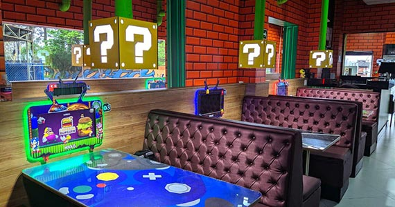

Um pouco sobre nós!
Localizada no coração de Santo André, a Miranda's Burger traz para o mercado os melhores hamburgueres da região. Fundada em 2022, já somos destaque na cidade e conquistamos novos clientes a cada dia
Nossa missão é: Proporcionar sabores incríveis para os nossos clientes".
Oferecemos diversos sabores deliciosos. O atendimento possui padrão de excelência e agilidade, garantindo qualidade e satisfação dos nossos clientes.
Nosso Estabelecimento
Nosso estabelecimento está localizado no coração do ABC paulista.
Benefícios
- Propocionar ótimos momentos
- Dividir com amigos e familiares
- Ingredientes de qualidade excelente
- Profissionais dedicados e atenciosos
- Limpeza nota mil!